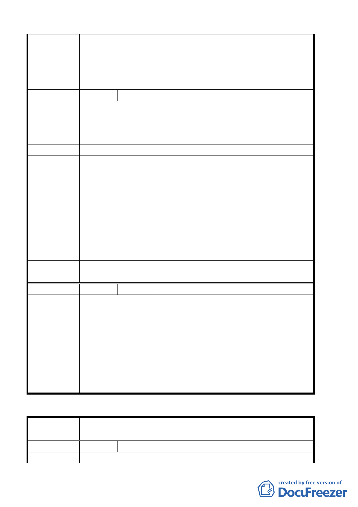

蔽率容積率依原住二規定倘開發面積達二○○○平方公尺其相
關規定比照住三惟應依「台北市土地使用分區管制規則」第八
十條之二規定，提供回饋。
委員會議
決議
同意依專案小組審查結論辦理。
編 號 １３ 陳情人 戴萬鍾
建議位置：北投區桃源段五小段 701、702、703、704、705、 708、
陳情理由
710 地號（北投區一德街 52 號）
建議理由：該區域皆為五樓住宅，且臨近中央北路 300 公尺內
皆已開放為住三。
建 議 辦 法 請放寬本區之住二山限區為住三特。
93.6.10 專案小組第五次審查會議：
有關調整新增山限區部分，留待下次會議請發展局通案說明其
原則、相關法令規定（含修正中的山坡地建築管理要點）及個
專 案 小 組 案說明其調整位置。另有關具保存價值的歷史建築，是否應優
結 論 先處理，至於有關通案性的相關規定（如保存區在都市計畫通
盤檢討的相關問題等），請發展局與文化局再行研商。
94.3.3 專案小組第十一次審查會議：同意發展局依等高線、駁
坎等人工設施，並配合坡度計算，調整山限區範圍。
委員會議
決議
同意依專案小組審查結論辦理。
編 號 14 陳情人 公園路燈工程管理處 94.8.8
北投區中央北路 4 段 601 巷（大度路至臨 7 號段）由本局新工
處依交通局規劃之道路路型施作道路新築工程後，現況道路路
陳情理由
型已明顯改變，新路通車後舊有道路已無通車功能，因係屬道
路用地，為符合管用合一之目標，擬併其北側已開發完竣之觀
海公園範圍變更為公園用地，俾便做整體綠美化以提昇該區域
之市容景觀。
建 議 辦 法 請併入已開發完竣之觀海公園變更為公園用地。
委 員 會 議 建議內容為並未包含該區完整交通系統，全案建請工務局另案
決 議 辦理個案變更。
臺北市都市計畫委員會公民或團體陳所提意見綜理表
案
名
臺北市北投區都市計畫通盤檢討（細部計畫）案-----------
桃源稻香生活圈
編
號１
陳情人 台北市政府交通局
陳 情 理 由 為利公車調度及一般車輛停車使用。
第 27 頁，共 49 頁